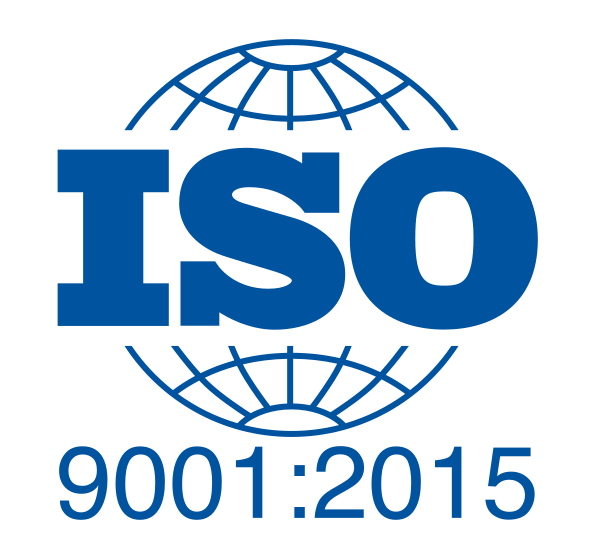
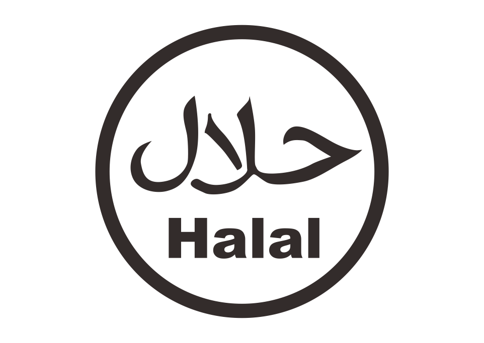
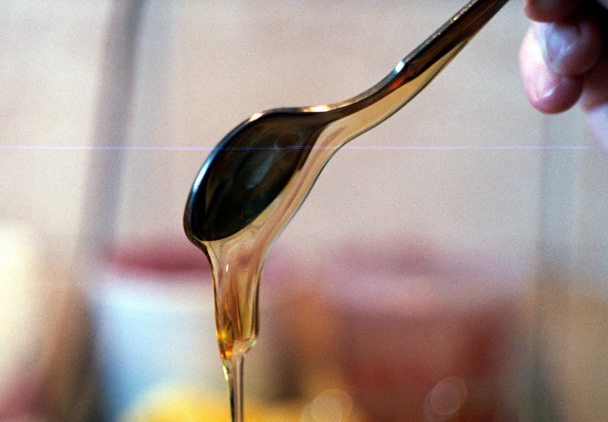
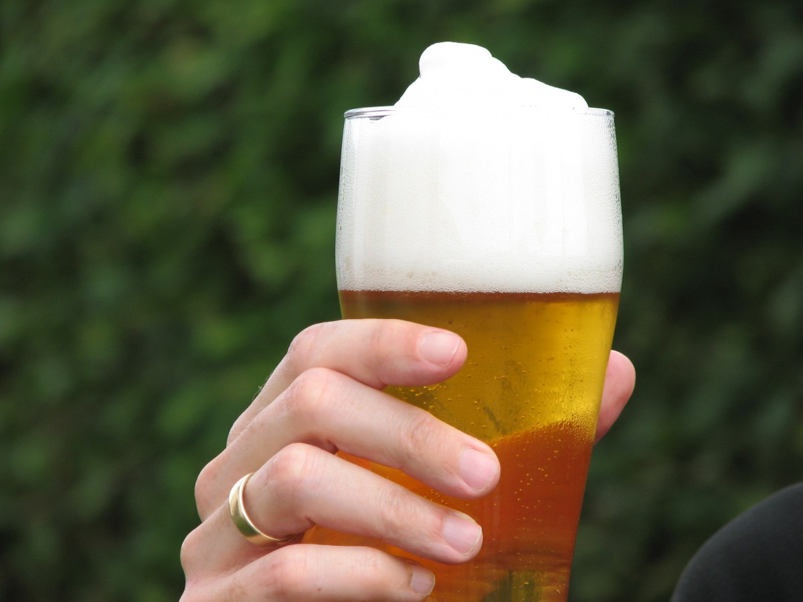
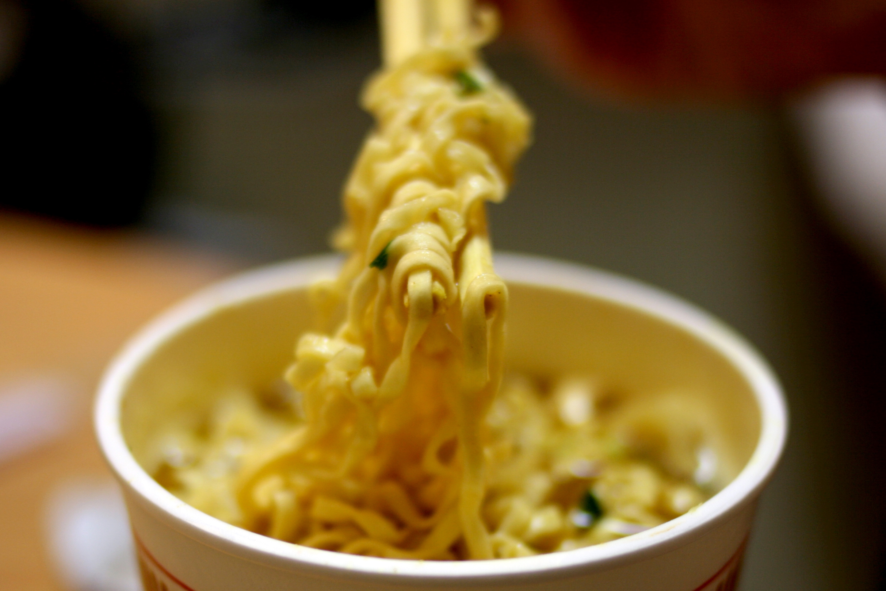
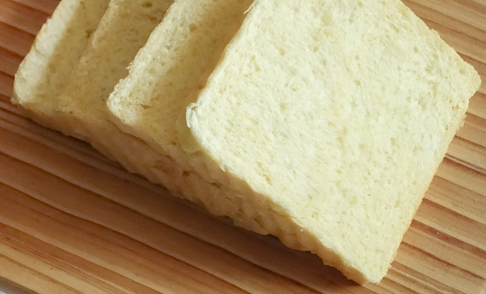

<div class="products-container">
    <!-- <div class="pga-img">
        
    </div> -->
    <div class="pga">
        <div class="pga-header">
            <h1 class="mat-h1">Propylene Glycol Alginate (PGA)</h1>
            <h1 class="mat-h1">โพรพิลีนไกลคอลอัลจิเนต</h1>
            <h1 class="mat-h1">INS405/E405</h1>
            <div class="pga-badges">
                <a href="https://porta.fda.moph.go.th/fda_search_all/PRODUCT/FRM_PRODUCT_FOOD.aspx?fdpdtno=1031964610002">
                    
                </a>
                
                
            </div>
        </div>
        <div class="pga-detail">
            <div class="pga-detail-general pga-section">
                <div class="pga-img-left">
                    
                </div>
                <div class="pga-description" *ngIf="language === 'en'">
                    Propylene Glycol Alginate (PGA) is formed through an esterification of alginic acid with propylele
                    glycol groups. It is soluble in both hot and cold water resulting in viscous solutions.
                </div>
                <div class="pga-description" *ngIf="language === 'th'">
                    Propylene Glycol Alginate (PGA) เกิดจากกระบวนการ esterification ของ กรด alginic กับ หมู่ propylele
                    glycol <br/> PGA ละลายได้ในน้ำร้อนและน้ำเย็น เมื่อละลายแล้วจะเกิดสารละลายที่ข้นเหนียว
                </div>
            </div>
            <div class="pga-detail-thicken pga-section">
                <div class="pga-img-right">
                    
                </div>
                <div class="pga-description" *ngIf="language === 'en'">
                    PGA and Sodium Alginate are often compared as they share common applications. Sodium Alginate has limitations in some circumstances. It becomes insoluble at low pH or at high concentrations of calcium, rendering it to be unsuitable for thickening or stabilizing foods such as fruit drinks, dressings, and calcium-rich dairy products. PGA can be perfectly used in those areas.
                </div>
                <div class="pga-description"*ngIf="language === 'th'">
                    PGA และ Sodium Alginate มีลักษณะการประยุกต์ใช้คล้ายคลึงกันแต่ Sodium Alginate มีข้อจำกัดหลายประการ Sodium Alginate ไม่สามารถละลายได้ในสภาพแวดล้อมที่ pH ต่ำ หรือความเข้มข้นของ Calcium สูง ส่งผลให้ Sodium Alginate ไม่เหมาะสมสำหรับการเพิ่มความหนืดในบางสภาพแวดล้อม อาทิ น้ำผลไม้ น้ำสลัด และ ผลิตภัณฑ์นมที่มี Calcium สูง PGA ไม่มีข้อจำกัดดังกล่าวทำให้สามารถประยุกต์ใช้ได้อย่างมีประสิทธิภาพ
                </div>
            </div>
            <div class="pga-detail-foam pga-section">
                <div class="pga-img-left">
                    
                </div>
                <div class="pga-description" *ngIf="language === 'en'">
                    PGA has one unique usage as a foam stabilizer in beer. Only a small concentration of PGA adding to beer maintain a fine foam when pouring into a glass.
                </div>
                <div class="pga-description" *ngIf="language === 'th'">
                    หนึ่งในการประยุกต์ใช้ที่โดดเด่นและเป็นเอกลักษณ์ของ PGA คือการเพิ่มความคงตัวของโฟมเบียร์ โดยการใส่ PGA ในปริมาณเพียงเล็กน้อยสามารถทำให้โฟมเบียร์มีความคงตัวเมื่อรินใส่แก้ว
                </div>
            </div>
            <div class="carousel-container">
                <ngb-carousel *ngIf="productCarouselImages">
                    <ng-template ngbSlide *ngFor="let image of productCarouselImages">
                        <div class="carousel-img-container">
                            
                        </div>
                    </ng-template>
                </ngb-carousel>
            </div>
            <div class="pga-detail-noodle-bread pga-section">
                <div class="pga-img-right">
                    
                    
                </div>
                <div class="pga-description" style="padding-top: 15%;" *ngIf="language === 'en'">
                    In additon, PGA can also be used in bread and noodles to improve texture. Adding PGA to bread dough can result in volume increase and improve elasticity.
                </div>
                <div class="pga-description" style="padding-top: 15%;" *ngIf="language === 'th'">
                    นอกจากที่กล่าวมาข้างต้น PGA ยังสามารถประยุกต์ใช้ในขนมปังและเส้นบะหมี่ PGA ช่วยให้ขนมปังมีปริมาตรเพิ่มขึ้นและช่วยในเรื่องของความยืดหยุ่น PGA ยังช่วยให้เส้นบะหมี่มีความนุ่มเหนียวไม่อืดน้ำและสามารถรักษาสภาพเส้นและเนื้อสัมผัสเมื่อถูกความเย็นหรือแช่แข็ง
                </div>
            </div>
            <div class="pga-detail-sales pga-section">
                <div class="pga-small-bag-icon">
                    <mat-icon>shopping_cart</mat-icon>
                </div>
                <div class="minimum-sales pga-description" *ngIf="language == 'en'">
                    Regarding the sales, Rosselle offers Propylene Glycol Alginate minimum of 5 bags (20 Kg/Bag). We are more then welcome to answer or discuss further on the sample, pricing, or other details. Please do not hesitate to reach out to us.
                </div>
                <div class="minimum-sales pga-description" *ngIf="language == 'th'">
                    โรสเซลล์จำหน่าย Propylene Glycol Alginate ขั้นต่ำ 5 ถุง (20 กก/ถุง) สามารถติดต่อทางบริษัทผ่านช่องทางต่างๆ เพื่อพูดคุยเพิ่มเติมเกี่ยวกับตัวอย่างสินค้า ราคาจัดจำหน่าย หรือรายละอียดอื่นๆ
                </div>
            </div>
            <div class="contact-us pga-section">
                <button mat-button routerLink="/contact" *ngIf="language === 'en'">Contact Us <mat-icon>keyboard_arrow_right</mat-icon></button>
                <button mat-button routerLink="/contact" *ngIf="language === 'th'">ติดต่อเรา <mat-icon>keyboard_arrow_right</mat-icon></button>
            </div>
        </div>
    </div>
</div>